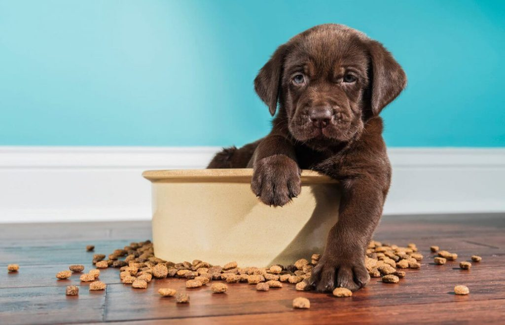
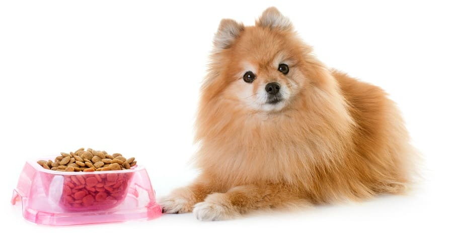
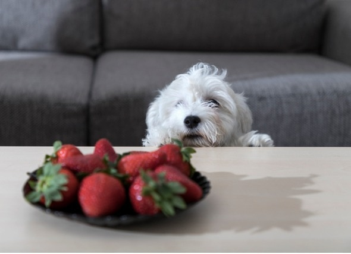

تولهها خیلی سریع رشد میکنن و تبدیل به یه سگ بالغ میشن. اما چیزی که تو این مسیر رشد از اهمیت زیادی برخورداره، زمان نیست بلکه تغذیه است. این دوران بهترین فرصت برای تأمین پروتئین، چربی و مواد مغذی مورد نیاز بدن توله سگهاست. بنابراین بهترین غذای توله سگ اونیه که بتونه تمام این موارد رو تو خودش جا بده.
چه از غذای خانگی برای توله سگ خودتون استفاده کنین، چه غذای تجاری، باید بدونین که چه نکاتی رو رعایت کنین. چون اگه تغذیه توله سگ شما در سنین اولیه به خوبی انجام بشه، در بزرگسالی یه سگ سالم و قوی خواهید داشت. ما در این مطلب مهمترین نکات تغذیهای و راهکارهای انتخاب یه رژیم غذایی مناسب برای تولهها رو آوردیم. با دونستن این موارد میتونین یه مسیر رشد عالی رو همراه با توله سگتون طی کنین.
اهمیت تغذیه توله سگ در رشد و سلامتی
تولهها با اشتهایی سیریناپذیر غذا میخورن و روند رشدشون حدود ۲۰ برابر یه سگ بزرگساله. از بدو تولد و شیرخوارگی تا حدودا یک سالگی دوره تولگی سگ به حساب میاد و سگ در حال رشد و تبدیل شدن به یه سگ بالغه.
اگه تغذیه توله سگ شما به بهترین شکل انجام بگیره، در بزرگسالی خیالتون از بابت سلامتیاش راحته. در مطلب غذای سگ پت پرس در مورد انتخاب رژیم غذایی مناسب برای سگ در سنین مختلف به طور کلی صحبت کردیم و پیشنهاد میکنیم که قبل یا بعد از این مقاله، حتماً اون رو بخونید؛ اما به دلیل اهمیت بالای خوراک توله سگ تصمیم گرفتیم اختصاصا مقاله جداگانهای رو هم به این موضوع اختصاص بدیم.
چه غذایی به توله سگ بدهیم؟
اهمیت تغذیه توله سگ در طول زندگیش به قدری زیاده که به نقل از یکی از مقالات مهم سایت Hillspet:
یه سگ سالم، سگیه که از زمان تولد تا به حال کاملترین رژیم غذایی رو داشته. این دقیقاً همون چیزیه که شما باید حواستون بهش باشه.
غذای مخصوص توله سگ باید تمام نیازهای تغذیهای و انرژی مورد نیازش رو برای رشد و فعالیت تامین کنه. به طور کلی پروتئین و چربی غذای توله باید بیشتر از غذای سگ بزرگسال باشه. همینطور این سگهای کوچولو برای رشد و استحکام استخوناشون به کلسیم بیشتری هم نیاز دارن.
گزینههای مختلف برای تغذیه توله سگ
برای انتخاب رژیم غذایی مناسب برای توله سگ چند گزینه دارین:
- آشپزی و تهیه غذا در خونه (غذای خونگی)
- محصولات تجاری و غذای آماده برای توله سگ
- ترکیبی از هردو (غذای خونگی+غذای تجاری)
انتخاب هرکدوم از این گزینهها به موارد مختلفی مثل زمان، وقت و هزینهای که میخواید برای سگتون صرف کنید و وضعیت و شرایط سلامتی سگتون بستگی داره. مثلا غذای توله سگ هاسکی و تولههای نژادهای بزرگ مثل ژرمن و روتوایلر با غذای سگهای عروسکی متفاوته.
همینطور اگه تصمیم به آشپزی برای سگتون گرفتید باید بدونید که ترکیبات غذا و مقدار اونا باید توسط دامپزشک تایید شده باشه. برای این کار میتونین با تهیه یه نسخه غذایی مخصوص خیال خودتون رو راحت کنین. اینجوری دیگه میتونین از هر ماده غذایی باید چند وقت یکبار یا به چه میزان در رژیم غذایی توله سگ دلبندتون استفاده کنین.
اگه برای رفتن پیش دامپزشک وقت ندارین یا نگران هزینهها هستید، بدونین که پت پرس این مشکل رو هم حل کرده: کار رو به کاردان بسپر، پت رو به پت پرس!
میتونم غذای خانگی برای توله سگ درست کنم؟
دلایل زیادی باعث میشه صاحبهای توله سگ به فکر درست کردن غذای خونگی برای توله کوچولوشون بیفتن؛ گرون شدن قیمت ارز، ممنوعیت واردات غذای خشک سگ خارجی و همینطور طعم خوشمزهتر و کیفیت بهتر غذای خانگی از جمله این دلایل هستن. اگه دوست دارین این کار رو تجربه کنین، پیشنهاد میکنیم حتماً با دستورپختهایی که تو مقاله «غذای خانگی برای سگ» اومده شروع کنین!
ولی نگران نباشید، ما این راهو بلدیم و دامپزشکای پت پرس میتونن برای توله سگ بامزه شما یه برنامه غذایی اختصاصی و کامل بنویسن. کافیه مشخصات توله مثل نژاد، وزن، سن، میزان فعالیت و … رو به ما بدین و بعد یه برنامه غذایی کامل و جامع تحویل بگیرید و با خیال راحت طبق اون برای توله سگتون آشپزی کنید.
دوست داری از تیم تغذیه پت پرس برای سگ قشنگت برنامه غذایی خونگی بگیری؟
سفارش آسان از طریق اپلیکیشن یا پر کردن فرم در صفحه برنامه غذایی


کدوم مدل تغذیه توله سگ بهتره؟ غذای خشک یا کنسروی؟
از همون لحظه که توله وارد خونهتون میشه و حتی قبل از اون باید در مورد رژیم غذاییش تصمیمگیری کرده باشید. تغییر رژیم غذایی سگ در بزرگسالی کار سختیه؛ پس از همین حالا تصمیمتونو بگیرید و برنامه غذایی سگ کوچولوتون رو مشخص کنید.
غذای آماده توله سگ به دو صورت غذای خشک و غذای تر یا کنسروی وجود داره و هرکدوم مزایا و معایب مختلفی دارن.
غذای خشک مزایای خیلی زیادی داره:
- از نظر مواد مغذی و ترکیبات بالانس شده است و در حالت عادی دیگه نیازی به استفاده از مکملهای غذایی و مولتی ویتامین ندارید
- نگهداری غذای خشک خیلی راحته و از نظر قیمت هم به صرفهتر و مناسبتره
- همچنین جویدن دانههای غذای خشک به جلوگیری از جرم دندان توله سگ کمک میکنه
همه این دلایل باعث شدن خیلی از صاحبان سگ غذای خشک رو به عنوان رژیم غذای سگشون انتخاب کنن.
اگر به توله غذای خشک میدید، حتما از غذای مخصوص توله سگ استفاده کنید!
غذای سگ بزرگسال به هیچ وجه پاسخگوی نیازهای تغذیهای تولهها نیست و براشون کافی نیست؛ بنابراین حتما تا سن یک سالگی به تولهتون غذای مخصوص توله سگ بدید تا خیالتون از هر بابت راحت باشه.
غذاهای تجاری که مخصوص توله ها تهیه میشن مقدار پروتئین، ویتامینها و مواد معدنی و اسیدهای چرب مفید بیشتری دارن که برای رشد اونا ضروریه.
غذای مخصوص توله سگها از نظر ترکیبات کاملا بالانس شده هستن و پروتئین بالا برای رشد و تقویت ماهیچهها، کربوهیدرات برای تامین انرژی مورد نیاز تولههای بازیگوش و مقدار کلسیم بالا برای تقویت و استحکام دندانها و استخوانها رو در ترکیب خود دارن.
غذای کنسروی هم از طرفی ویژگیهای مثبت متعددی داره:
- درصد بالایی از ترکیبات کنسرو پروتئین گوشته
- طعم لذیذتر و خوشمزهتری داره و بافتش هم به گوشت شبیهتره
- حاوی مقادیر زیادی آبه و آب مورد نیاز بدن توله رو تا حد زیادی تامین میکنه
اما عیب این نوع غذا، قیمت به مراتب بالاتر و گرونتره و به محض باز شدن هم باید بلافاصله استفاده بشه.
به اعتقاد پت پرس و همینطور تمامی دامپزشکان:
بهترین رژیم غذایی برای توله سگ رژیم غذایی بالانس شده و تجویز شده توسط دامپزشک است.
برای سفارش برنامه غذایی سگ دلبندتون از متخصص تغذیه پت پرس یا دریافت اطلاعات بیشتر، روی دکمه زیر بزنین تا در واتساپ با ما در ارتباط باشید.
مقدار غذای توله سگ چقدر باید باشه؟
برنامه غذایی توله سگ و مقدارهای دقیق اون در طول روز به چند عامل مهم و تأثیرگذار بستگی داره:
- نژاد توله سگ
- سن
- وزن
- میزان فعالیت
- وضعیت سلامتی
بنابراین باید با مشورت دامپزشک و براساس وضعیت سلامت توله مقدار غذایی مورد نیازش رو تعیین کنید. این نسخههای غذایی هر چند وقت یکبار با معاینه بعدی و دریافت اطلاعات تکمیلی به روز میشن.
علاوه بر این روی بستهبندی غذای تجاری سگ معمولاً جدولی وجود داره که مقدار غذای مورد نیاز رو با توجه به وزن سگ و میزان فعالیتش مشخص میکنه.
اگه یه غذا باکیفیت و مغذی باشه مقدار کمی از اون برای توله کافیه؛ اما اگه غذایی بیکیفیت و ارزان باشه هرچقدر هم که بهش غذا بدید باز هم نمیتونه نیازهای تغذیهای مورد نیاز توله سگ رو تامین کنه. در هر صورت ما در ادامه تو هر بخش گفتیم که در روز چند بار و با چه فواصل زمانیای باید به تولهتون غذا بدین.
تشویقی در تربیت توله سگ نقش مهمی داره و لازمه که برای تایید و تشویق سگ به انجام دادن یا ندادن کارها از تشویقی استفاده کنید. به عنوان صاحب سگ باید حواسمون باشه که از چه نوع و چه مقدار تشویقی استفاده میکنیم و مقدار کالری و پروتئین اون رو در برنامه غذایی سگ محاسبه کنیم تا توله سگ به چاقی و اضافه وزن دچار نشه. اگه میخواین درباره انواع تشویقی و نحوه استفاده از اونا بیشتر بدونین، خوندن مطلب «تشویقی سگ» میتونه بهتون کمک بکنه.
برنامه غذایی توله سگ از بدو تولد تا بلوغ و بزرگسالی
کاملاً طبیعیه که غذای توله سگ ۴۰ روزه یا یک ماهه یا توله سگ ۲ ماهه به بالا فرق داشته باشه. این تفاوت هم براساس نیازهای فیزیکی بدنش در دورههای مختلف رشد میاد. در ادامه بهتون میگیم که تو هر مقطع بهتره چطور تغذیهاش کنین.
تغذیه توله سگ تازه به دنیا آمده تا سن ۲ ماهگی
تولهها تا هشت هفتگی حتما باید پیش مادرشون باشن و از شیر مادر تغذیه کنن. شیر مادر بهترین و کاملترین منبع تغذیهای برای توله است و اونو در برابر بسیاری از بیماریها واکسینه میکنه؛ بنابراین ازتون خواهش میکنیم از خرید تولههای زیر ۲ ماه خودداری کنید.
اما اگه بنا به هر دلیلی باید از یه توله سگ کوچولو نگهداری کنید لازمه که در مورد غذای توله سگ بی مادر اطلاعات کافی کسب کنید. تو مطلب نگهداری از توله سگ اطلاعات کاربردی و جزئیات بسیاری در رابطه با این موضوع براتون آوردیم تا طی کردن این راه براتون آسونتر بشه.

به توله سگ یک ماهه چه غذایی بدهیم؟
همونطور که بالا گفتیم، بهترین گزینه شیر مادره. اما اگه به هر دلیلی مادرش حضور نداره، باید از شیر جایگزین و مخصوص برای غذای توله سگ یک ماهه استفاده کنین. شیرهای مناسب برای توله سگها رو به همراه شیشه شیر میتونین از فروشگاهها تهیه کنین.
نحوه شیر دادن به توله سگ هم اینجوریه که شیر خشک یا شیر جایگزین رو باید براساس فرمولی که پشت محصول ذکر شده بسازین. شیر نباید خیلی داغ یا خیلی سرد باشه، در حد دمای بدن کافیه. توله رو روی پاتون بخوابونین و تا زمانی که توله بطری رو رها نکرده یا از خوردن خسته نشده، اجازه بدین که بخوره. در واقع شکم توله سگ باید روی زمین باشه و موقع خوردن شیر چونه اون رو به زمین باشه و به هیچ وجه برای شیر دادن به توله سگ اونو برعکس نکنید،حالت درست و غلط نحوه شیر دادن رو در تصویر زیر ببینین.
برای اینکه این کار رو به صورت اصولی انجام بدین و نکات مهمشو بدونین، پیشنهاد میکنیم مطلب شیر دادن به توله سگ رو هم حتما مطالعه کنین.
برای تغذیه توله سگ یک ماهه موارد زیر را به خاطر داشته باشید:
- مناسبترین غذا: شیر مادر یا شیر جایگزین
- تعداد وعده های غذایی توله سگ ۱ ماهه در روز: ۴ تا ۵ دفعه
- فواصل زمانی بین وعدهها: توله سگ تازه به دنیا آمده هر ۲ تا ۳ ساعت- توله سگ ۲ تا ۴ هفتهای، هر ۶ تا ۸ ساعت
غذای توله سگ ۴۰ روزه چی باید باشه؟
بعد از یک ماهگی تا ۶ هفتگی باید توله خودتون رو با غذای جدیدش آشنا کنین. فرقی نداره غذای توله سگ ۴۰ روزه تجاری باشه یا خانگی. مهم اینه که هر دو بالانس شده و مناسب شرایط گوارشی توله باشه.
به طور کلی میشه گفت:
- مناسبترین غذا: غذای خانگی بالانس شده و غذاهای خشک استارتر
- تعداد وعدهها در روز: ۳ الی ۴ دفعه
- فواصل زمانی بین وعدهها: ۳ تا ۴ ساعت
غذای توله سگ دو ماهه تا سه ماه
دیگه وقتش رسیده که شیر مادر رو از غذای توله سگ دو ماهه کنار بذاریم و اونو به خوردن غذا عادت بدیم. در این سن میتونید اونو به خونه بیارید. توله در این دوره به ۳-۴ وعده غذا در روز نیاز داره و چون هنوز کوچولو و کم سنه و باید غذای توله سگ دو ماهه رو با کمی آب یا شیر ترکیب کنید و بهش بدید.
این فرمول کلی برای همه سگهاست؛ اما در مورد هر نژاد ممکنه تفاوتهایی وجود داشته باشه. مثلا در مورد نژادهای بزرگ توله تا ۹-۱۰ هفتگی به غذای مرطوب و پوره شده نیاز داره؛ اما در مورد نژادهای کوچک و عروسکی این مدت تا ۱۲-۱۳ هفتگی ممکنه ادامه داشته باشه. در این مورد حتما باید با دامپزشک مشورت کنید.
بهترین غذا برای توله سگ دو ماهه و سه ماهه چیه؟
وعدههای کوچیک با سطح انرژی بالا. این یعنی ترکیبی از مواد با پروتئین خیلی بیشتر. چون تو این دوره توله در حال جذب مواد مغذی برای رشده و هنوز تحرکش خیلی زیاد نشده. توی این دوره باید فقط یه نوع غذا بخوره یا غذا خونگی بالانس شده یا غذا خشک استارتر.
چرا تاکید داریم که این غذای مناسب برای توله سگ دو ماهه به حساب میاد؟ تو بهترین زمان رشد، با یه تغذیه مقوی سلامت آیندهاش تضمین میشه.
در مورد نوع و تعداد دفعات تغذیه در این سن موارد زیر رو بدونید:
- مناسبترین غذا: پوره خانگی یا تجاری
- تعداد وعده در روز: ۳ الی ۴ دفعه
- فواصل زمانی بین وعدهها: ۳ تا ۴ ساعت
غذای توله سگ سه ماهه تا ۶ ماه
همونطور که گفتیم لازمه که غذای توله سگ دو ماهه رو با آب یا شیر ترکیب کنین. ولی از سن ۳ ماهگی به بعد میتونید کم کم غذای آبکی و پوره شده رو کنار بذارید و غذای خشک و جامد بهش بدید. توصیه میکنیم حتما از غذاهای باکیفیت متعلق به برندهای معتبر استفاده کنید و به خاطر قیمت ارزان هر غذایی استفاده نکنید. چون تغذیه مناسب توله سگ ضامن سلامت و طول عمرش در بزرگسالی خواهد بود.
تعداد وعدههای غذاییش رو هم میتونید به ۳ بار در روز کاهش بدید (البته در این مورد با دامپزشک مشورت کنید).
تغذیه توله سگ شش ماهه تا یک سالگی
از ۶ ماهگی تعداد وعده غذای توله سگ رو به ۲ بار در روز کاهش بدید؛ البته این تغییر رو به مرور و کم کم انجام بدید تا سگ بهش عادت کنه. به طور کلی سگها تا ۱۲ ماهگی توله حساب میشن و در یک سالگی به بلوغ و بزرگسالی میرسن و لازمه که دیگه بهشون غذای بزرگسال داده بشه.
اما سن بلوغ در نژادهای مختلف ممکنه کمی تفاوت داشته باشه و دیرتر یا زودتر اتفاق بیفته.
مثلا در مورد نژادهای کوچک که دوره رشد کوتاهتری دارن تغییر غذا رو میتونید در ۷-۹ ماهگی انجام بدید؛ اما برخی نژادهای بزرگتر تا ۱۲-۱۳ و حتی ۱۴ ماهگی هم در حال رشدن و توله سگ محسوب میشن و به انرژی بالایی نیاز دارن.
بهترین روش برای تغییر غذای توله سگ چیه؟
برای این کار باید غذای جدید رو بخش به بخش وارد چرخه غذایی توله بکنین، وگرنه ممکنه غذای جدید رو نپذیره و مشکلات گوارشی مختلفی مثل استفراغ و اسهال براش ایجاد بشه.
توله سگ از چند ماهگی غذا میخورد؟
از یک ماهگی به بعد روند خوردن غذا شروع میشه اما به صورت پوره. این پوره یا خانگیه یا غذای خشک تجاری که با شیر ترکیب میشه. آشنایی با غذای جدید نباید یه شبه اتفاق بیفته. باید این کار رو آروم آروم انجام بدین تا توله به غذای جدید عادت کنه. تو ۸ هفتگی دیگه توله شما باید به خوردن غذای جدید خو گرفته باشه.
برای این که بتونین قدم به قدم این کار رو پیش ببرین، باید از این مطلب تغییر غذای سگ کمک بگیرین.
تفاوت تغذیه توله سگ نژاد بزرگ و نژاد کوچک
محصولاتی که اختصاصا برای توله سگها تهیه میشه دستهبندیهای مختلفی دارن؛ اما به طور کلی دو دسته بندی کلی وجود داره که بیشتر هم در غذای خشک دیده میشه:
- غذای مخصوص توله سگ نژاد بزرگ
- غذای مخصوص توله سگ نژاد کوچک
تغذیه مخصوص توله سگ نژاد بزرگ
تولههای نژاد بزرگ مثل ژرمن شپرد، روتوایلر و دوبرمن نیاز به روند رشدی کند و مستمر دارن تا از بروز بسیاری از مشکلات ناشی از رشد بیرویه و زودهنگام جلوگیری بشه. مثلا تولههای نژاد بزرگ مستعد ابتلا به مشکلات مفاصل هستن؛ به همین دلیل غذای مخصوص این نژادها حاوی مواد مغذی بیشتری برای تقویت مفاصل و استخوانهاست. محصولات غذایی که مخصوص نژادهای بزرگ تهیه شدن به خوبی پاسخگوی نیازهای تغذیهای این تولهها هستن.
اگه نژاد سگتون یکی از نژادهای زیر است، بهتره مطلب خاص خودشو بخونین تا اطلاعات کاملتری رو در موردش یاد بگیرین:
تغذیه مخصوص توله سگ نژاد کوچک
تولههای نژاد کوچک مثل پاگ، پامرانین، شیواوا و شیتزو تریر هم نیازهای تغذیهای متفاوتی دارن و به رژیم غذایی ویژهای نیاز دارن. به طور مثال غذای خشک تولههای نژاد کوچک باید حاوی دانههای ریز باشه تا با فک و آرواره کوچک این نژادها تناسب داشته باشه. همینطور نژادهای کوچک معمولا سوخت و ساز و متابولیسم سریعتری دارن و به غذاهای پرانرژیتری نیاز دارن.
خیالت راحت، ما این راهو بلدیم و برای برخی از نژادهای کوچیک و محبوب مقالات تغذیه اختصاصی نوشتیم که میتونید با خوندنشون یاد بگیرین چه نکاتی رو باید توی تغذیهی اونا رعایت کنین:
- غذای پامرانین
- غذای سگ شیتزو تریر
- غذای خانگی برای سگ شیتزو
- غذای نژاد شیواوا
- تغذیه سگ مالتیز
- غذای سگ پودل
- غذای نژادهای اشپیتز
بنابراین مهمترین نکته موقع خرید غذای توله سگ توجه به جثه و اندازه نژاد سگتون هست.
برخی برندهای معتبر مثل غذای سگ رویال کنین غذاهای مخصوص نژادی دارن که ما خرید این نوع غذاها رو توصیه میکنیم. محصولات مختلفی مخصوص تولههای ژرمن شپرد، پامرانین، شیتزو تریر، شیواوا و … وجود داره که کاملا مطابق با نیازهای تولههای در حال رشد این نژادها طراحی و تولید شدن.
بهترین غذاهای خشک و کنسروی مخصوص توله سگ
غذای رویال کنین مخصوص توله سگهای نژاد بزرگ
ترکیبات: پروتئین طیور، برنج، آرد ذرت، چربی حیوانی، پروتئین گیاهی، گندم، روغن ماهی، مواد معدنی و ویتامین
آنالیز محصول
| پروتئین | فیبر | چربی |
|---|---|---|
| ۳۰% | ۲.۶% | ۱۶% |
رویال کنین توله سگ نژاد کوچک
ترکیبات: مرغ، برنج، ذرت، چربی مرغ، گندم، چغندر، روغن ماهی، ویتامینها و مواد معدنی
غذای خشک سگ جوسرا مدل Junior Kids
ترکیبات: پروتئین مرغ، ذرت، برنج، فیبر چغندر، چربی مرغ، مواد معدنی، گوشت خشک شده
- مخصوص توله سگهای نژاد متوسط و بزرگ
- حاوی گوشت پرندگان
- مناسب برای تولههای ۲ ماه به بالا
- تامین کننده سلامت دستگاه قلبی عروقی و اندام حرکتی
- دارای مقادیر مناسب چربی و پروتئین جهت تنظیم سرعت رشد
- ایجاد هماهنگی بین رشد عضلانی و استخوانی بهمنظور ممانعت از بروز مشکلات مفصلی
- حاوی ۲۵٪ پروتئین، ۱۲٪ چربی، ۲.۳٪ فیبر و ۶.۷٪ خاکستر
غذای هپی داگ با طعم بره و برنج مخصوص توله سگ
محصول: آلمان
ترکیبات: پروتئین گوشت بره، آرد برنج، آرد ذرت، چربی گوشت گاو، روغن آفتابگردان، چغندر، ویتامینها و مواد معدنی
جدول آنالیر ترکیبات
| پروتئین | فیبر | چربی | کلسیوم |
|---|---|---|---|
| ۳۰% | ۱۶% | ۲.۵% | ۱.۵% |
غذای کنسرو یو اس پت
محصول: آلمان
ترکیبات: گوشت مرغ، کدوتنبل
کنسرو سگ آنیموندا با طعم بوقلمون و پنیر؛ غذای مورد علاقه توله سگ ها
ترکیبات: بوقلمون ۴۸%، پنیر ۷%، گندم، کربنات کلسیم
- غذای کنسروی آنیموندا مخصوص سگهای زیر ۱۰ کیلوگرم تهیه شده و فوقالعاده خوش خوراک و لذیذه.
- در تهیه این غذا از طعمدهنده، رنگ و نگهدارنده مصنوعی استفاده نشده.
- این غذا رو میتونید به تنهایی با در ترکیب با غذای خشک به سگتون بدید.
سوالات متداول درباره نحوه تغذیه توله سگ
اگه هنوزم راجعبه نحوه تغذیهی توله سگ سوال دارین، شاید جوابش رو بتونین بین موارد زیر پیدا کنین.
به توله سگ ضعیف چه غذایی بدیم؟
برای درست کردن غذای تقویتی توله سگ بهتره از مواد غذایی زیر استفاده کنین که خیلی سریع باعث رشد بهتر و بهبود جسمیشون بشه.
- تخم مرغ
- ذرت
- آب قلم
- انواع گوشتهای تازه
- روغن امگا ۳
- انواع کربوهیدارت مثل برنج و سیب زمینی
درست کردن یه غذای مقوی برای توله سگ ضعیف کار سختی نیست. فقط باید از دامپزشکتون برای ترکیب این مواد مشورت بگیرین.
بهترین صبحانه برای توله سگ چیست؟
معمولاً برای این که توله سگ بتونه صبح رو با انرژی و کالری کافی شروع کنه و برای طول روز کم نیاره سعی کنین تو وعده صبحانه توله سگ خودتون یکی از اینا رو جا بدین:
- برنج یا پاستا
- ماهی سالمون یا مرغ یا گوشت قرمز
- کدو حلوایی
- سیب
- نخود سبز
- ماست
- تخم مرغ
شما میتونین بسته به شرایط سگتون از این مواد غذایی برای صبحانه استفاده کنین.

از چه سنی به سگ میوه بدهیم؟
از ۶۰ روزگی میتونین به سگ میوه بدین. فقط باید این کار رو با قطعات کوچیک شروع کنین. این رو هم به خاطر بسپرین که سگها ذاتاً هیچ نیازی به میوهها تو رژیم غذاییشون ندارن اما شما میتونین از اونا به عنوان تشویقی و مکملهای طبیعی استفاده کنین.
پیشنهاد میکنیم مطلب میوه برای سگ رو مطالعه کنین تا با میوههای مجاز و ممنوعه برای سگ کاملا آشنا بشین.
غذای مناسب برای رشد توله سگ چیه؟
قبل از این که بگیم کدوم غذا برای رشد توله سگ کاربردیتره باید بگیم که تغییر برنامه غذایی توله به بزرگسال نقش خیلی مهمی تو رشدش داره. گاهی وقتها توله سگها تو برخی از نژادها زودتر به اون بلوغ مدنظر میرسن. شما باید اون زمان رو تشخیص بدین و غذاش رو جابهجا کنین.
چون غذای توله سگ پرکالریه و مصرفش کمکی به درشت شدن توله سگ در زمان صحیح نمیکنه و فقط باعث اضافه وزن کاذب میشه. غذای مناسب برای رشد توله سگ مورد خاصی نیست که بشه بهش اشاره کرد. بلکه ترکیب متعادلی از آب، پروتئین، چربی مفید، کربوهیدارت، فیبر، مواد معدنی و انواع ویتامینها ایدهآلترین تغذیه ممکن برای بزرگ شدن توله سگ رو فراهم میکنن.
غذای توله سگ ولگرد چیست؟
اگه شما قصد نگهداری دورادور از یه تولهسگ خیابانی رو دارین، بهتره از غذاهای خشک تجاری مناسب سن و جثهاش به عنوان غذای توله سگ خیابانی استفاده کنین. ترجیحاً از موارد ممنوعه برای غذای سگ بومی استفاده نکنین.
اگه هم قصد دارین غذای خونگی بهشون بدین باید دقت کنین که منبع گوشتی تو همون منطقه باشه. چون اجداد اون سگ طبیعتاً از همین منابع پروتئینی تغذیه میکردن و بهتره که غذای توله سگ بومی رو هم از همون جنس تهیه کنین.

توله سگ شما کدوم غذا رو بیشتر دوست داره؟
همونطور که گفتیم تغذیه توله سگ تو رشد اون اهمیت چشمگیری داره. اگه قصد دارین از غذای خانگی برای توله سگ استفاده کنین، حتماً از دامپزشک براش نسخه برنامه غذایی خاص خودش رو بگیرین. حواستون باشه که کمبود هر یک از مواد غذایی یا مازاد اون در رژیم غذایی سگ ممکنه آروم آروم باعث بیماری یا مشکلات جسمی اون بشه و شما ازش بی خبر باشین.
اگه هم دوست دارین که فقط از غذای تجاری برای توله سگتون استفاده کنین، سعی کنین غذاهای مناسب سنش رو تهیه کنید. چکاپهای دورهای رو هم همیشه تو برنامهتون بذارین.
شما ترجیح میدین که برای رژیم غذایی توله سگ خودتون از کدوم نوع برنامه غذایی استفاده کنین: اونی که خودتون با عشق پختین یا اونی که کارخونهها با یه فرمول عالی آماده کردن؟
قطعاً انتخاب سختیه اما خب هر دو مزایای خودشون رو دارن. نکته مهم هم اینه که غذای توله سگ باید مورد علاقه خود حیوون هم باشه و مهمتر از اون با خوردنش سالم بمونه. حتما حتما نکات مرتبط به تغذیه توله سگ در ماهها و روزهای مختلف رو کامل یاد بگیرین تا مثلا غذای توله سگ ۴۰ روزه رو به توله سگ سه ماهه ندین یا برعکس.


سلام بنده یک توله ۴۰روزه محلی دارم نژادش تقریبا درشت، هزینه تهیه خوراکش برام مقدور نیست لطفن لطفن اگر کسی اطلاع داره یک برنامه غذایی که خودم درست کنم برام بفرسته ممنون میشم الان دوروزه اشتها نداره واسهاله یک شماره واتس آپ هم دارم، ۰۹۳۵۸۳۳۵۰۱۱
سلام دوست عزیز
شما میتونید با پرکردن فرم موجود در صفحه ی دریافت برنامه غذایی سگ با ما ارتباط بگیرید و مطابق با توان مالی و شرایط سگتون برنامه مناسبش رو از ما دریافت کنید.
سلام میشه از خوراک خونه بهش بدیم مثلا مرغ یا برنج خودمون یا گوشت
سلام دوست عزیز، بله میتونین ولی باید توسط دامپزشک بسته به ویژگی هایی مثل وزن ،سن، میزان فعالیت ، نژاد و حتی بیماری خاص مقدارشون مشخص بشه پیشنهاد میکنم مقاله ی همه چیز در مورد غذای سگ مطالعه کنید و برای دریافت رژیم متناسب به تغذیه آنلاین مراجعه کنید. پیشنهاد میکنم مقاله اطلاعات بیشتر در مورد پلن تغذیه ( برنامه غذایی اختصاصی سگ) رو هم مطالعه کنین.
با سلام ممنون از سایت شما .ببخشید لطفاً کنید عکس شماره ۶ از بالا .آن سگ کوچک که زبانشو درآورده میشه نوع نژادشو برام تو ایمیل بنویسید .چون از نظر اطلاعات دارویی . غذایی .نگهداری غیره مشکل دارم .. چون دوهفته است که خریدم .دو ماهه است ..ممنون
سلام دوست عزیز،
تشخیص نژاد از روی ظاهر در توله ها درصد خطای بالایی داره. باتوجه به نژاد کناریش ممکنه شیواوا باشه. بهترین و مطمئن ترین راه تست DNA هست، اگه سن سگتون بیشتر از این توله هست میتونین عکسش رو برامون ارسال کنین تا بتونیم تا حد ممکن نژادش رو از روی ظاهر تشخیص بدیم:
نژاد سگ من چیه؟ (تعیین نژاد سگ از روی عکس)
سلام خسته نباشید. ببخشید اگه به هر دلیلی نخواهیم برای توله سگ یا حتی سگ بالغ از غذای های کارخانه ای استفاده کنیم و یا کمتر استفاده کنیم باید به چه صورت عمل کنیم.
یعنی تا حد زیادی از نیاز های غذایی حیوان رو با خودمان برطرف کنیم
سلام ساناز جان،
میتونین کم کم عادتش بدین به غذای خونگی که معمولا ترکیبی از مرغ پخته درکنار برنج، هویج پخته یا سیب زمینی هست. اوایل غذا خشکو خونگیو مخلوط بدین بعد به مرور از نسبت غذای خشک کم کنین تا درنهایت با غذای خونگی جایگزین کنین. ولی محض احتیاط بهتره از جهت تامین ویتامین ها و مواد معدنی مولتی ویتامین یا مکملای غذایی دراختیارشون بذارین.